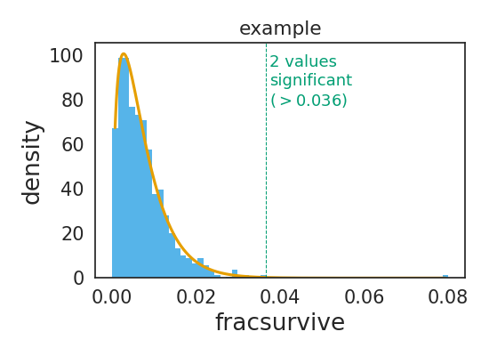

plot¶
Plotting related functions for dms_tools2.
-
class
dms_tools2.plot.AugmentedPairGrid(data, hue=None, hue_order=None, palette=None, hue_kws=None, vars=None, x_vars=None, y_vars=None, diag_sharey=True, height=2.5, aspect=1, despine=True, dropna=True, size=None)[source]¶ Bases:
seaborn.axisgrid.PairGridAugmented version of seaborn.PairGrid.
-
ax_lims_clip_outliers(frac_clip=0.001, extend=0.03)[source]¶ Sets axis limits to clip outliers in data.
Useful if there are a few data points far outside the range of most of the data.
- Args:
- frac_clip (float)
- Set upper and lower limits so that this fraction of data is outside limits at both ends. Done before adding extend.
- extend (float)
- Extend the limits determined by frac_clip by this fraction of the data range.
-
-
dms_tools2.plot.COLOR_BLIND_PALETTE= ['#000000', '#E69F00', '#56B4E9', '#009E73', '#F0E442', '#0072B2', '#D55E00', '#CC79A7']¶ color-blind safe palette use by adding to your plots the following scale_fill_manual(COLOR_BLIND_PALETTE) or scale_color_manual(COLOR_BLIND_PALETTE).
-
dms_tools2.plot.COLOR_BLIND_PALETTE_GRAY= ['#999999', '#E69F00', '#56B4E9', '#009E73', '#F0E442', '#0072B2', '#D55E00', '#CC79A7']¶ color-blind safe palette that differs from COLOR_BLIND_PALETTE in that first color is gray rather than black.
-
dms_tools2.plot.breaksAndLabels(xi, x, n)[source]¶ Get breaks and labels for an axis.
Useful when you would like to re-label a numeric x-axis with string labels.
Uses matplotlib.ticker.MaxNLocator to choose pretty breaks.
- Args:
- xi (list or array)
- Integer values actually assigned to axis points.
- x (list)
- Strings corresponding to each numeric value in xi.
- n (int)
- Approximate number of ticks to use.
- Returns:
- The tuple (breaks, labels) where breaks gives the locations of breaks taken from xi, and labels is the label for each break.
>>> xi = list(range(213)) >>> x = [str(i + 1) for i in xi] >>> (breaks, labels) = breaksAndLabels(xi, x, 5) >>> breaks [0, 50, 100, 150, 200] >>> labels ['1', '51', '101', '151', '201']
-
dms_tools2.plot.findSigSel(df, valcol, plotfile, fdr=0.05, title=None)[source]¶ Finds “significant” selection at sites / mutations.
Designed for the case where most sites / mutations are not under selection, but a few may be. It tries to find those few that are under selection.
It does not use a mechanistic statistical model, but rather uses robust regression (soft L1 loss) to fit a gamma distribution. The rationale for a gamma distribution is that it is negative binomial’s continuous analog. It then identifies sites that clearly have larger values than expected under this distribution. It currently does not identify sites with smaller (or more negative) than expected values.
- Args:
- df (pandas DataFrame)
- Contains data to analyze
- valcol (string)
- Column in df with values (e.g., fracsurvive)
- plotfile (string)
- Name of file to which we plot fit.
- fdr (float)
- Find sites that are significant at this fdr given fitted distribution.
- title (string or None)
- Title for plot.
- Returns:
Creates the plot in plotfile. Also returns the 3-tuple (df_sigsel, cutoff, gamma_fit) where:
- df_sigsel is copy of df with new columns P, Q, and sig. These give P value, Q value, and whether site meets fdr cutoff for significance.
- cutoff is the maximum value that is not called significant. Because FDR is a property of a distribution, this value cannot be interpreted as meaning a new data point would be called based on this cutoff, as the cutoff would change. But cutoff is useful for plotting to see significant / non-significant.
- gamma_params is a numpy.ndarray that of length 3 that gives the shape, scale, and location parameter of the fit gamma distribution.
An example: First, simulate points from a gamma distribution:
>>> shape_sim = 1.5 >>> scale_sim = 0.005 >>> loc_sim = 0.0 >>> gamma_sim = scipy.stats.gamma(shape_sim, scale=scale_sim, ... loc=loc_sim) >>> nsites = 1000 >>> scipy.random.seed(0) >>> df = pandas.DataFrame.from_dict({ ... 'site':[r for r in range(nsites)], ... 'fracsurvive':gamma_sim.rvs(nsites)})
Now make two sites have “significantly” higher values:
>>> sigsites = [100, 200] >>> df.loc[sigsites, 'fracsurvive'] = 0.08
Now plot and find the significant sites:
>>> plotfile = '_findSigSel.png' >>> (df_sigsel, cutoff, gamma_params) = findSigSel( ... df, 'fracsurvive', plotfile, title='example')
Here is the resulting plot:
Make sure the fitted params are close to the ones used to simulate the data:
>>> numpy.allclose(shape_sim, gamma_params[0], rtol=0.1, atol=1e-3) True >>> numpy.allclose(scale_sim, gamma_params[1], rtol=0.1, atol=1e-3) True >>> numpy.allclose(loc_sim, gamma_params[2], rtol=0.1, atol=1e-3) True
Check that we find the correct significant sites:
>>> set(sigsites) == set(df_sigsel.query('sig').site) True
Make sure that sites above cutoff are significant:
>>> df_sigsel.query('sig').equals(df_sigsel.query('fracsurvive > @cutoff')) True
-
dms_tools2.plot.hist_bins_intsafe(x, method='fd', shrink_threshold=None, maxbins=100)[source]¶ Histogram bins that work for integer data.
You can auto-choose bins using numpy.histogram. However, if the data are integer, these bins may be non-integer and so some bins will capture more integers. This function fixes that.
- Args:
- x (numpy array)
- The data to bin.
- method (str)
- The binning method. Can be anything acceptable to numpy.histogram as a bins argument.
- shrink_threshold (None or int)
- If set to a value other than None, apply a heuristic threshold to slow the growth in number of bins if they exceed this number.
- maxbins (int)
- Maximum number of bins.
- Returns:
- The bin edges as returned in the second element of numpy.histogram, but adjusted to be of integer width if the data are all integers.
Just like numpy.histogram for non-int data:
>>> numpy.random.seed(1) >>> x = 100 * numpy.random.random(500) >>> bin_edges = numpy.histogram(x, bins='fd')[1] >>> bin_edges_intsafe = hist_bins_intsafe(x)[ : len(bin_edges)] >>> numpy.allclose(bin_edges, bin_edges_intsafe) True >>> numpy.allclose(bin_edges, bin_edges.astype('int')) False
But gives integer bins for int data: >>> x = x.astype(‘int’) >>> bin_edges = numpy.histogram(x, bins=’fd’)[1] >>> bin_edges_intsafe = hist_bins_intsafe(x) >>> numpy.allclose(bin_edges, bin_edges_intsafe) False >>> numpy.allclose(bin_edges, bin_edges.astype(‘int’)) False >>> numpy.allclose(bin_edges_intsafe, bin_edges_intsafe.astype(‘int’)) True
-
dms_tools2.plot.latexSciNot(xlist)[source]¶ Converts list of numbers to LaTex scientific notation.
Useful for nice axis-tick formatting.
- Args:
- xlist (list or number)
- Numbers to format.
- Returns:
- List of latex scientific notation formatted strings, or single string if xlist is a number.
>>> latexSciNot([0, 3, 3120, -0.0000927]) ['$0$', '$3$', '$3.1 \\times 10^{3}$', '$-9.3 \\times 10^{-5}$']
>>> latexSciNot([0.001, 1, 1000, 1e6]) ['$0.001$', '$1$', '$10^{3}$', '$10^{6}$']
>>> latexSciNot([-0.002, 0.003, 0.000011]) ['$-0.002$', '$0.003$', '$1.1 \\times 10^{-5}$']
>>> latexSciNot([-0.1, 0.0, 0.1, 0.2]) ['$-0.1$', '$0$', '$0.1$', '$0.2$']
>>> latexSciNot([0, 1, 2]) ['$0$', '$1$', '$2$']
-
dms_tools2.plot.plotBCStats(names, bcstatsfiles, plotfile)[source]¶ Plots
dms2_bcsubampbarcode statistics for set of samples.- Args:
- names (list or series)
- Names of the samples for which we are plotting statistics.
- bcstatsfiles (list or series)
- Names of
*_bcstats.csvfiles created bydms2_bcsubamp. - plotfile (str)
- Name of PDF plot file to create.
-
dms_tools2.plot.plotCodonMutTypes(names, countsfiles, plotfile, classification='aachange', csvfile=None)[source]¶ Plot average frequency codon mutation types.
The averages are determined by summing counts for all sites.
- Args:
- names (list or series)
- Names of samples for which we plot statistics.
- countsfiles (list or series)
*_codoncounts.csvfiles of type created bydms2_bcsubamp.- plotfile (str)
- Name of created PDF plot file.
- classification (str)
The method used to classify the mutation types. Can be:
aachange : stop, synonymous, nonsynonymous
n_ntchanges : number of nucleotide changes per codon
singlentchanges : nucleotide change in 1-nt mutations
- csvfile (str or None)
- None or name of CSV file to which numerical data are written.
-
dms_tools2.plot.plotColCorrs(df, plotfile, cols, *, lower_filter=None, title=None, shrink_threshold=25)[source]¶ Plots correlation among columns in pandas Data Frame.
Plots distribution of each variable and pairwise correlations.
- Args:
- df (pandas DataFrame)
- Data frame with data to plot.
- plotfile (str or None)
- Name of created plot, or None if you want plot returned.
- cols (list)
- List of columns in df to plot.
- lower_filter (None or str)
- Can be any string that can passed to the query function of df. In this case, on the lower diagonal only plot data for which this query is True.
- title (None or str)
- Title of plot.
- shrink_threshold (float)
- See argument of same name to
hist_bins_intsafe().
- Returns:
- If plotfile is a string, makes the plot and does not return anything. If plotfile is None, returns the plot.
-
dms_tools2.plot.plotCorrMatrix(names, infiles, plotfile, datatype, trim_unshared=True, title='', colors='black', contour=False, ncontours=10)[source]¶ Plots correlations among replicates.
- Args:
- names (list or series)
- Names of samples for which we plot statistics.
- infiles (list or series)
- CSV files containing data. Format depends on datatype.
- plotfile (str)
- Name of created PDF plot file.
- datatype (str)
- Type of data for which we are plotting correlations:
- prefs: in format returned by
dms2_prefs - mutdiffsel: mutdiffsel from
dms2_diffsel - abs_diffsel: sitediffsel from
dms2_diffsel - positive_diffsel: sitediffsel from
dms2_diffsel - max_diffsel: sitediffsel from
dms2_diffsel - mutfracsurvive: from
dms2_fracsurvive
- prefs: in format returned by
- trim_unshared (bool)
- What if files in infiles don’t have same sites / mutations? If True, trim unshared one and just analyze ones shared among all files. If False, raise an error.
- title (str)
- Title to place above plot.
- colors (str or list)
- Color(s) to color scatter points. If a string, should specify one color for all plots. Otherwise should be list of length len(names) * (len(names) - 1) // 2 giving lists of colors for plots from top to bottom, left to right.
- contour (bool)
- Show contour lines from KDE rather than points.
- ncontours (int)
- Number of contour lines if using contour.
-
dms_tools2.plot.plotCumulMutCounts(names, countsfiles, plotfile, chartype, nmax=15, maxcol=4)[source]¶ Plot fraction of mutations seen <= some number of times.
For each set of counts in countsfiles, plot the fraction of mutations seen greater than or equal to some number of times. This is essentially a cumulative fraction plot.
- Args:
- names (list or series)
- Names of samples for which we plot statistics.
- countsfiles (list or series)
*_codoncounts.csvfiles of type created bydms2_bcsubamp.- plotfile (str)
- Name of created PDF plot file.
- chartype (str)
The type of character in countsfiles.
- codon
- nmax (int)
- Plot out to this number of mutation occurrences.
- maxcol (int)
- Number of columns in faceted plot.
-
dms_tools2.plot.plotDepth(names, countsfiles, plotfile, maxcol=4, charlist=['AAA', 'AAC', 'AAG', 'AAT', 'ACA', 'ACC', 'ACG', 'ACT', 'AGA', 'AGC', 'AGG', 'AGT', 'ATA', 'ATC', 'ATG', 'ATT', 'CAA', 'CAC', 'CAG', 'CAT', 'CCA', 'CCC', 'CCG', 'CCT', 'CGA', 'CGC', 'CGG', 'CGT', 'CTA', 'CTC', 'CTG', 'CTT', 'GAA', 'GAC', 'GAG', 'GAT', 'GCA', 'GCC', 'GCG', 'GCT', 'GGA', 'GGC', 'GGG', 'GGT', 'GTA', 'GTC', 'GTG', 'GTT', 'TAA', 'TAC', 'TAG', 'TAT', 'TCA', 'TCC', 'TCG', 'TCT', 'TGA', 'TGC', 'TGG', 'TGT', 'TTA', 'TTC', 'TTG', 'TTT'])[source]¶ Plot sequencing depth along primary sequence.
- Args:
- names (list or series)
- Names of samples for which we plot statistics.
- countsfiles (list or series)
- Files containing character counts at each site. Should have column named site and a column for each character in charlist.
- plotfile (str)
- Name of created PDF plot file containing count depth.
- maxcol (int)
- Number of columns in faceted plot.
- charlist (list)
- Characters contained in countsfiles. For instance, list of codons or amino acids.
-
dms_tools2.plot.plotFacetedNeutCurves(neutdata, plotfile, xlabel, ylabel, maxcol=3)[source]¶ Faceted neutralization curves with points and fit line.
- Args:
- neutdata (pandas DataFrame)
- Should have the following columns: concentration, sample, fit, points. The plot is faceted on sample. The line smoothly connects all points in column fit, and points are drawn anywhere that points is not NaN.
- plotfile (str)
- Name of created plot.
- xlabel (str)
- x-axis label
- ylabel (str)
- y-axis label
- maxcol (int)
- Number of columns in facets.
-
dms_tools2.plot.plotMutFreq(names, countsfiles, plotfile, maxcol=4)[source]¶ Plot mutation frequency along primary sequence.
- Args:
- names (list or series)
- Names of samples for which we plot statistics.
- countsfiles (list or series)
*_codoncounts.csvfiles of type created bydms2_bcsubamp.- plotfile (str)
- Name of created PDF plot file.
- maxcol (int)
- Number of columns in faceted plot.
-
dms_tools2.plot.plotRarefactionCurves(df, rarefy_col, plotfile, *, facet_col=None, nrow=1, xlabel='reads', ylabel=None, facet_scales='free')[source]¶ Plots rarefaction curves.
The rarefaction curves are calculated analytically using
dms_tools2.utils.rarefactionCurve.- Args:
- df (pandas DataFrame)
- Data frame containing data. In tidy form if faceting.
- rarefy_col (str)
- Name of column in df that contains the variable that we rarify. For instance, these might be strings giving barcodes.
- plotfile (str)
- Name of created plot.
- facet_col (str or None)
- If not None, should be name of a column in df that contains a variable we facet in the plot.
- nrow (int)
- If faceting, the number of rows.
- xlabel (str)
- X-axis label.
- ylabel (str or None)
- Y-axis label. If None, defaults to value of rarefy_col.
- facet_scales (str`)
- Scales for faceting. Can be “free”, “free_x”, “free_y”, or “fixed”
Here is an example. First, we simulate two sets of barcodes. For ease of fast simulation, the barcodes are just numbers here. One samples a large set, the other a set a quarter that size with half as many reads:
>>> nbc = 40000 >>> bclen = 10 >>> nreads = 200000 >>> barcodes = list(range(nbc)) >>> numpy.random.seed(1) >>> large_set = numpy.random.choice(barcodes, size=nreads) >>> small_set = numpy.random.choice(barcodes[ : nbc // 4], size=nreads // 2)
Now we put these in a tidy data frame where one column is named “barcodes” and the other is named “sample”:
>>> df = pandas.DataFrame({ ... "barcodes":list(small_set) + list(large_set), ... "sample":['small_set'] * len(small_set) + ... ['large_set'] * len(large_set)})
Finally, plot the rarefaction curves:
>>> plotfile = '_plotRarefactionCurves.png' >>> plotRarefactionCurves(df, 'barcodes', plotfile, facet_col='sample')
Here is the resulting plot:

-
dms_tools2.plot.plotReadStats(names, readstatfiles, plotfile)[source]¶ Plots
dms2_bcsubampread statistics for a set of samples.- Args:
- names (list or series)
- Names of the samples for which we are plotting statistics.
- readstatfiles (list or series)
- Names of
*_readstats.csvfiles created bydms2_bcsubamp. - plotfile (str)
- Name of PDF plot file to create.
-
dms_tools2.plot.plotReadsPerBC(names, readsperbcfiles, plotfile, maxreads=10, maxcol=6)[source]¶ Plots
dms2_bcsubampreads-per-barcode stats for set of samples.- Args:
- names (list or series)
- Names of samples for which we plot statistics.
- readsperbcfiles (list or series)
- Names of
*_readsperbc.csvfiles created bydms2_bcsubamp. - plotfile (str)
- Name of PDF plot file to create.
- maxreads (int)
- For any barcodes with > this many reads, just make a category of >= this.
- maxcol (int)
- Number of columns in faceted plot.
-
dms_tools2.plot.plotSiteDiffSel(names, diffselfiles, plotfile, diffseltype, maxcol=2, white_bg=False, highlighted_sites=[])[source]¶ Plot site diffsel or fracsurvive along sequence.
Despite the function name, this function can be used to plot either differential selection or fraction surviving.
- Args:
- names (list or series)
- Names of samples for which we plot statistics.
- diffselfiles (list or series)
*sitediffsel.csvfiles fromdms2_diffselor*sitefracsurvive.csvfiles fromdms2_fracsurvive.- plotfile (str)
- Name of created PDF plot file.
- diffseltype (str)
- Type of diffsel or fracsurvive to plot:
- positive: positive sitediffsel
- total: positive and negative sitediffsel
- max: maximum mutdiffsel
- minmax: minimum and maximum mutdiffsel
- avgfracsurvive: total site fracsurvive
- maxfracsurvive: max mutfracsurvive at site
- maxcol (int)
- Number of columns in faceted plot.
- white_bg (bool)
- Plots will have a white background with limited other formatting.
- highlighted_sites (list)
- Highlight sites of interest (passed in string format) in grey.


{kind=link}